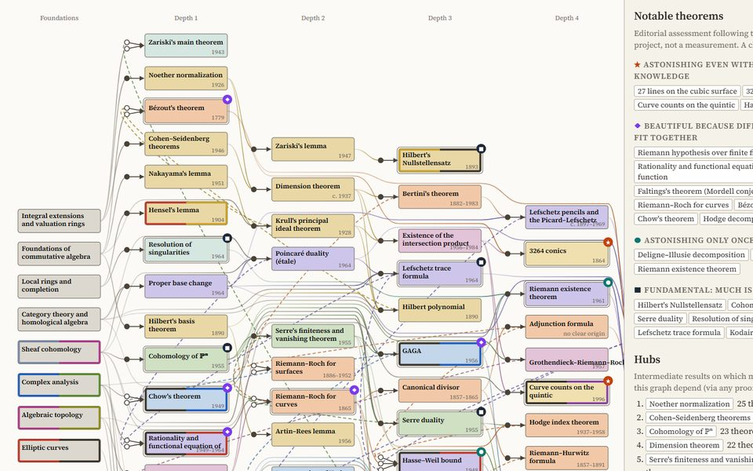
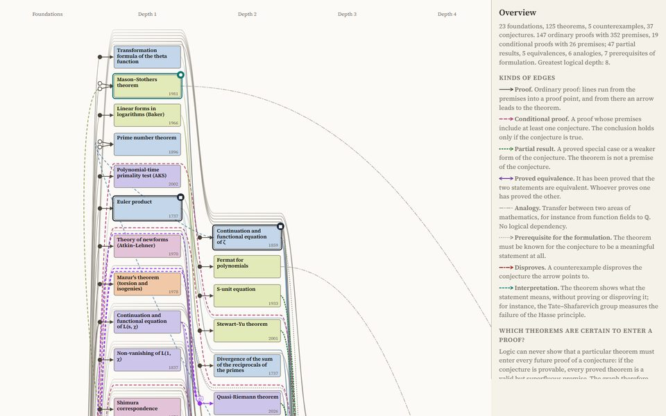

Theorem graphs
Theorems and conjectures of an area with their proofs: an arrow leads from each premise of a proof to the theorem it proves. The theorems are ordered by logical depth. The two graphs below are first versions; they will be replaced by theorem graphs built on the concept graphs of the same areas.

Algebraic geometry
Central theorems of algebraic geometry with their proofs, ordered by logical depth; also as a graph of concepts and as a graph of concepts and theorems.

Arithmetic geometry
Proved theorems and open conjectures around the Riemann hypothesis, the Birch and Swinnerton-Dyer conjecture and the abc conjecture, with conditional proofs and their relations.
Theorem graphs of further areas will follow. The concepts of these areas are in the concept graphs.